Annotation et détails 2D
Ce chapitre décrit les cotes et les contraintes, les notes de texte, les étiquettes, les pièces et les surfaces avec leurs schémas de couleurs, les vues de légende, et les outils de dessin 2D : lignes de détail, régions, composants de détail, détails répétitifs, isolation et vues 2D libres. Les annotations appartiennent à la vue dans laquelle elles sont faites : une cote placée dans un plan n'apparaît pas dans un autre plan.
Avant chaque clic, chaque outil montre ce qu'il créerait à l'endroit du curseur : la cote avec sa valeur, le cadre de la note, l'étiquette sur l'élément sous le curseur, la région qu'une pièce ou une surface occuperait, la ligne, la région, le composant ou l'isolation en cours de dessin.
Cotes
Annotations ▸ Cote regroupe les outils de cotation : Alignée, Linéaire, Angulaire, Radial, Diamètre, Longueur d'arc, et les cotes de point Elévation du point, Coordonnée du point et Pente du point. Ils fonctionnent dans les plans, les coupes, les élévations, les vues de dessin et les légendes. Choisissez le type de cote dans le sélecteur de type pendant que l'outil est actif ; Paramètres du type modifie le type, et avec lui chaque cote de ce type.
Cotes alignées et linéaires
Avec Alignée, la barre des options propose la partie du mur qui est pointée (Axes du mur, Faces du mur, Centre de l'âme, Faces de l'âme) et ce que désigne un clic :
- Références : cliquez les références l'une après l'autre (faces ou axes de mur, quadrillages, bords de portes et de fenêtres, lignes de détail, bords des symboles de légende), puis cliquez dans un endroit vide pour y placer la ligne de cote. Pendant le choix, la chaîne suit le curseur. Appuyez sur TAB au-dessus d'un mur pour parcourir ses références.
- Murs entiers : un seul clic cote un mur entier. Options ouvre les options de cotation automatique : Ouvertures avec leurs Centres ou leurs deux Largeurs, Murs d'intersection et Quadrillages d'intersection ; les ouvertures par largeurs et les murs d'intersection sont cochés au départ. Au survol, un mur s'éclaire avec toutes les références que le clic ajoutera. Cliquez le mur, cliquez d'autres murs pour les ajouter à la chaîne, puis cliquez à côté pour placer la ligne. À chaque extrémité la chaîne va jusqu'au mur qui y est joint (son axe ou sa face extérieure, selon la préférence de la barre des options). Un mur-rideau incorporé au mur compte comme une ouverture. Un quadrillage qui tombe sur l'extrémité d'un mur ou sur une autre référence n'ajoute aucune ligne d'attache. Cela fonctionne de même en plan, en coupe et en élévation.
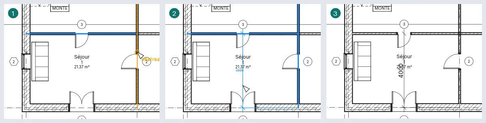
Linéaire mesure selon l'horizontale ou la verticale de la vue, entre des points tels que les extrémités de murs : l'endroit où vous placez la ligne décide laquelle, et la barre d'espace passe de l'une à l'autre.
Angulaire mesure l'angle entre deux murs, quadrillages ou lignes qui se rejoignent ; plusieurs lignes par le même point font une chaîne d'angles, chacun avec sa valeur ; le dernier clic choisit le secteur.
Cotes radiales, de diamètre et de longueur d'arc
Radial, Diamètre et Longueur d'arc cotent un cercle ou un arc : d'une ligne de détail ou d'un mur courbe. Cliquez-le, puis l'endroit où va la cote. Sur un mur courbe, la Préférence de la barre des options décide ce qui vient d'abord (sa ligne d'axe, ses faces, son noyau) et TAB passe aux autres. Une cote de diamètre passe par le centre avec une flèche sur la courbe à chaque extrémité et Ø avant la valeur ; placée hors de la courbe, sa ligne se prolonge pour porter la valeur. Sur un arc plus court qu'un demi-cercle, elle couvre quand même tout le diamètre. Les cotes suivent l'arc quand son rayon change et disparaissent quand il est supprimé. Dans une coupe ou une élévation, seuls les arcs dessinés là sont proposés.
Une cote radiale ou de diamètre sélectionnée a une poignée à son extrémité sur la courbe : faites-la glisser pour tourner la ligne autour du centre ; lâchée sur un autre arc ou cercle de même centre, la cote mesure celui-ci. Sa valeur ouvre Texte de cote, et la poignée en dessous déplace le texte, comme pour les cotes alignées. Les valeurs des cotes angulaires et de longueur d'arc l'ouvrent aussi et se déplacent de la même façon.
Modifier une cote
- Sélectionnez une cote et cliquez sur sa valeur : Texte de cote s'ouvre. Utiliser la valeur réelle garde la mesure et ajoute du texte au-dessus, au-dessous, avant ou après ; Remplacer par du texte affiche des mots à la place (un nombre est refusé).
- Faites glisser la poignée bleue sous le texte pour l'éloigner de la ligne ; ramené près de la ligne, il s'y aimante. Un texte déplacé loin reçoit une ligne de repère en arc vers son segment ; Ligne de repère dans la barre des options la supprime.
- Sélection : cotes ▸ Lignes d'attache ▸ Modifier les lignes d'attache : cliquez des éléments pour ajouter des lignes d'attache, cliquez une ligne d'attache existante pour la retirer, puis cliquez dans un endroit vide pour terminer. Chaque ligne d'attache d'une cote sélectionnée a une poignée en son milieu : clic droit ▸ Déplacer la ligne d'attache, puis cliquez la nouvelle référence ; ou ▸ Supprimer les lignes d'attache. La poignée à l'extrémité côté élément d'une ligne d'attache fait glisser son écart par rapport à l'élément ; près de l'écart d'une autre ligne d'attache, elle prend le même.
- Sélectionnez un élément que la cote mesure et cliquez une valeur à côté de lui : tapez une nouvelle distance et appuyez sur Entrée, et l'élément se déplace : un mur, une grille, une porte ou une fenêtre (le long de son mur) ou une ligne de détail.
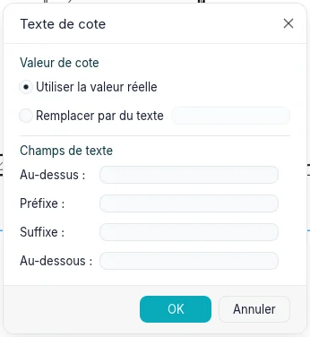
Le type fixe le repère (diagonale, flèche pleine ou point), les prolongements de la ligne de cote et des lignes d'attache (Contrôle de ligne d'attache : un espace jusqu'à l'élément, ou Fixe à la ligne de cote avec sa Longueur de ligne d'attache), la Distance d'accrochage de la ligne de cote (au placement ou en la faisant glisser, la ligne s'accroche à des multiples de celle-ci depuis ce qu'elle mesure, et à un pas d'une chaîne parallèle pour que les chaînes s'empilent régulièrement ; une ligne pointillée et une info-bulle montrent l'accrochage ; 0 la désactive), l'Épaisseur de ligne et l'Épaisseur de ligne de la marque, le Symbole d'axe, le Motif d'axe et la Marque d'axe (Par défaut : celle du type) des lignes d'attache vers les axes, la couleur, la taille du texte, le décalage, le fond, le gras, l'italique et le souligné, les unités (Format des unités ouvre Format : Utiliser les paramètres du projet, ou une unité avec son arrondi, éventuellement Personnalisée avec un Facteur d'incrément, son symbole et ses options), et pour les cotes linéaires le Type de chaîne de cotes : Continue, Ligne de base (valeurs empilées à partir de la première référence) ou Coordonnée (valeurs à partir de la première référence le long d'une seule ligne). Afficher la hauteur d'ouverture écrit la hauteur d'une porte ou d'une fenêtre sous la largeur mesurée de tableau à tableau. Les types radiaux et de diamètre ont leur repère de centre (Repères de centre, avec sa taille) et leur symbole : Texte du symbole de rayon (R) ou Texte du symbole de diamètre (Ø), et sa place, Avant la valeur, Après la valeur ou Masqué (Position du symbole de rayon, Position du symbole de diamètre). La ligne de repère du texte déplacé dépend du Type de ligne de repère : Arc, ou Ligne avec sa Longueur d'épaulement et la Position du texte (Au-dessus : l'épaulement passe sous le texte ; Aligné : il s'arrête sur le côté du texte) ; Marque de ligne de repère marque son extrémité sur la ligne de cote, et Afficher la ligne de repère lorsque le texte est déplacé la dessine dès que le texte bouge (Loin de l'origine) ou seulement au-delà des lignes d'attache (Au-delà des lignes d'attache). Avec des flèches, un segment trop court pour les contenir les a à l'extérieur, et la ligne de cote se prolonge au-delà d'elles de Prolongement de ligne de cote inversée. Annotations ▸ Cote ▸ Types de cote ouvre les paramètres du type courant de chaque famille, à régler avant de coter.
Une chaîne de lignes de base sélectionnée montre à son origine une poignée d'inversion : cliquez-la, ou appuyez sur la barre d'espace, pour mesurer depuis l'autre extrémité. Décalage de ligne de base dans ses propriétés fixe la distance entre ses lignes sur le papier.
Un type en coordonnées a des Paramètres des cotes en coordonnées dans ses paramètres du type : Modifier… ouvre une boîte de dialogue avec l'Orientation du texte (Aligné sur les lignes d'attache ou Horizontal), la Position du texte (Dans l'axe de la ligne d'attache ou Au-dessus de la ligne d'attache), la Visibilité de l'origine, le Repère d'origine (Valeur zéro, Cercle ou la Marque du type) et le Style de ligne de cote (Continue ou Aucune, qui ne laisse que les lignes d'attache et leurs marques).
Cotes temporaires
Sélectionnez un élément : les cotes temporaires montrent ses distances aux références parallèles les plus proches : murs, quadrillages, niveaux, plans de référence, bords des sols, lignes de séparation de pièce et lignes de détail. Elles apparaissent pour chaque catégorie dans chaque vue où l'élément est dessiné : plans, coupes, élévations et vues 3D, où elles se trouvent sur le niveau de l'élément. Un niveau sélectionné montre, dans une coupe ou une élévation, ses distances aux niveaux au-dessus et au-dessous.
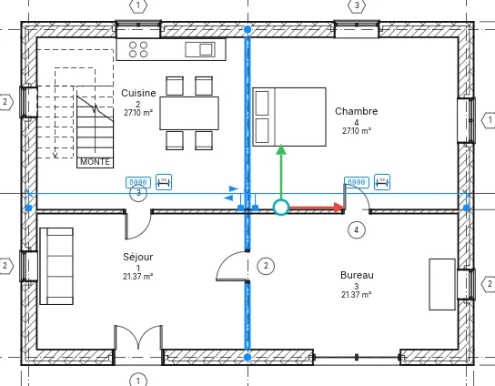
Cliquez une valeur, saisissez-en une nouvelle et appuyez sur Entrée pour déplacer l'élément : une
longueur peut avoir son unité (2.5 m), et une formule commence par = (=8000/2). Cliquez le
symbole de cote à côté pour la rendre permanente.
Chaque ligne d'attache a une poignée bleue. Faites glisser celle de la référence sur n'importe quelle autre référence pour mesurer depuis celle-ci ; ou clic droit ▸ Déplacer la ligne d'attache, puis cliquez la nouvelle référence. Un clic sur une poignée passe d'une référence à l'autre du même objet : l'axe d'un mur, ses faces, les faces de l'âme et le centre de l'âme. L'élément mémorise les références choisies, pour chaque vue, et elles suivent quand la référence se déplace ; clic droit ▸ Réinitialiser les références revient aux plus proches.
Avec plusieurs éléments sélectionnés, aucune n'est affichée, et la barre des options propose Activer les cotes pour les afficher pour tous les éléments sélectionnés.
Pendant le placement d'un composant, d'une porte ou d'une fenêtre, les cotes temporaires montrent ses distances aux références les plus proches ; Tab passe aux suivantes. Laissez le pointeur immobile un instant : l'élément attend pendant que le pointeur va vers l'une de ses valeurs, et un clic sur la valeur permet de saisir la distance à laquelle il se place. Pendant le dessin, la longueur et l'angle sont affichés ; Faire pivoter montre l'angle comme une cote angulaire, et un angle saisi fait pivoter la sélection.
Projet ▸ Paramètres supplémentaires ▸ Cotes temporaires définit d'où mesurent les murs (Axe, Faces, Centre de l'âme, Faces de l'âme) et les portes et fenêtres (Axe ou Ouvertures), pour tout le projet. La même boîte de dialogue définit le texte de toutes les cotes temporaires, pour l'application : de 8 à 20 pt (8 au départ), sur un arrière-plan transparent ou opaque. À côté des réglages, un aperçu montre trois murs cotés comme choisi ; l'interrupteur Aperçu de l'en-tête le masque, la boîte de dialogue garde sa taille, et le choix est conservé.
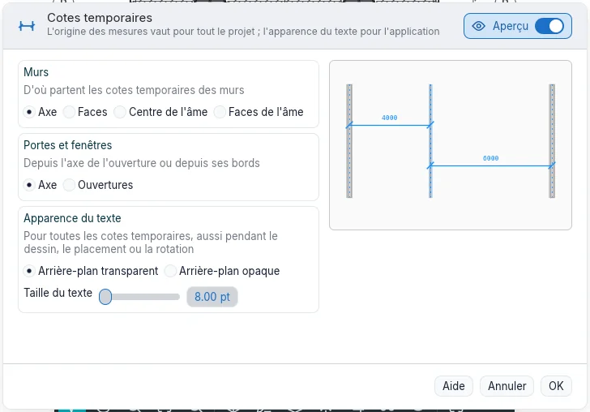
Contraintes
Sélectionnez une cote : un cadenas s'affiche sur chaque segment. Cliquez-le pour verrouiller le segment : la distance tient alors quand l'un ou l'autre élément se déplace, et un déplacement qui la romprait est refusé. Cliquez-le de nouveau, ou clic droit ▸ Activer/désactiver le verrouillage, pour déverrouiller ; clic droit ▸ Afficher les éléments associés sélectionne les deux éléments que le verrou lie. Une chaîne de deux segments ou plus affiche EQ : cliquez dessus et les références deviennent équidistantes, et le restent quand l'une d'elles se déplace. Affichage de l'égalité dans les propriétés montre les valeurs au lieu de EQ.
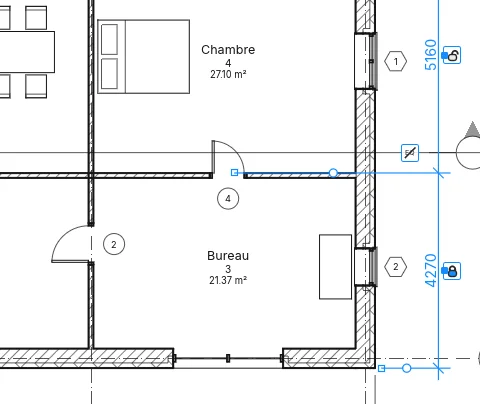
Sélectionner un élément que tient une contrainte montre la contrainte en lignes bleues discontinues, sauf si la catégorie Contraintes est masquée dans Visibilité et graphisme. Supprimer une cote qui tient une contrainte demande quoi faire : OK supprime la cote et garde la contrainte ; Supprimer les éléments supprime les deux. Modifier ▸ Aligner avec son cadenas fermé est aussi une contrainte.
Cotes de point
- Elévation du point : dans un plan, cliquez un sol, un toit ou le niveau ; dans une coupe, un point quelconque. La valeur est en mètres, avec son signe.
- Coordonnée du point : les coordonnées nord et est d'un point dans un plan.
- Pente du point : la pente d'un pan de toit dans un plan, ou d'une ligne inclinée dans une coupe, avec une flèche pointant vers le bas.
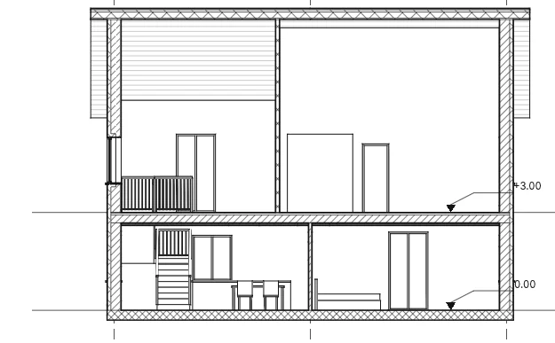
La barre des options propose Ligne de repère et, avec une ligne de repère, Épaulement : sans ligne de repère, un clic place la cote ; avec une ligne de repère, cliquez le point puis le texte ; avec un épaulement, le point, le coude et le texte. Pendant le survol, la valeur s'affiche au curseur. Pour les élévations de point, elle propose aussi Base relative : (pour un type dont l'Origine de l'élévation est Relatif) et, dans les plans, Afficher les élévations : : l'élévation réelle, le haut, le bas, ou les deux. Pour les pentes de point, Représentation de la pente : dessine une Flèche ou, dans les coupes, un Triangle.
Une cote de point sélectionnée a des poignées à son point, à son épaulement et à son texte : faites glisser le point et la cote mesure ce qui s'y trouve. Une cote de point sur un sol ou un toit est supprimée avec lui. Pendant le placement, Échap abandonne la cote à moitié placée ; un second Échap termine l'outil.
Le type de cote de point fixe l'Indicateur d'élévation, l'Indicateur supérieur et l'Indicateur inférieur (l'indicateur supérieur ou inférieur, puis celui de l'élévation, puis la valeur ; le … comme préfixe/suffixe de chacun le place plutôt après la valeur), le Symbole, Inclure l'élévation et l'Indicateur Nord/Sud et l'Indicateur Est/Ouest des coordonnées (avec Indicateur comme préfixe/suffixe), et la Longueur de la ligne de repère et la Direction de la pente (Bas ou Haut) des pentes.
Les Propriétés d'une cote d'élévation proposent aussi Préfixe valeur unique/supérieure et Suffixe valeur unique/supérieure et, pour la valeur inférieure, Préfixe valeur inférieure et Suffixe valeur inférieure : des mots écrits avant et après la valeur.
Flèches, polices et unités alternatives
Projet ▸ Paramètres supplémentaires ▸ Flèches ouvre les Paramètres du type des types de flèche du projet. Chacun a un Style de flèche (Flèche, Diagonale, Point, Trait renforcé, Symbole d'altitude), Remplie, Angle d'ouverture, Taille de la marque sur papier et, pour le trait renforcé, sa propre épaisseur ; ce que le style n'utilise pas est grisé. Dupliquer… et Renommer… fonctionnent comme pour les autres types ; l'aperçu montre le repère d'une note et une cote dessinés avec la flèche. Chaque flèche de repère (textes, étiquettes, symboles, cotes de point) et chaque marque des types de cote proposent Aucun et ces types : changer un type change chaque dessin qui l'utilise. Copier les paramètres d'un projet les copie, Purger les éléments inutilisés retire ceux que rien n'utilise.
Dans le type de cote, Police du texte, Facteur de largeur et Sens de lecture (alignée sur la ligne ou horizontale : toujours droite, aussi sur les cotes verticales) façonnent la valeur ; Unités alternatives affiche une seconde valeur à droite ou dessous, avec son Format…, son préfixe et son suffixe. Sur le bureau, Police du texte propose aussi les polices de l'ordinateur ; un projet ouvert sur un ordinateur qui ne l'a pas la dessine en BIMopen Sans et le signale à l'ouverture. Dans la version web restent nos deux polices. Le type de cote d'altitude choisit aussi le Symbole (Aucun, Triangle, Triangle plein, Réticule) et la Flèche de ligne de repère, avec les épaisseurs du repère et de la flèche.
Texte
Annotations ▸ Texte ▸ Texte (TX) : cliquez où va la note et tapez ; Entrée commence une nouvelle
ligne. Un clic donne une note qui ne revient pas à la ligne ; un glissement lui donne une largeur,
et les mots y passent à la ligne. Cliquer ailleurs termine la note, et Échap termine l'outil. Tab pendant la saisie décale
le paragraphe. La taille du texte est celle du papier : la note garde sa taille
imprimée à toute échelle de vue.
Le groupe Format règle, avant le placement ou sur une note sélectionnée :
- la ligne de repère : Aucune ligne de repère, Un segment (cliquez la pointe, puis la note), Deux segments (pointe, coude, note) ou Courbe ;
- l'alignement, à gauche, au centre ou à droite, et Gras, Italique et Souligné (Ctrl+B, Ctrl+I, Ctrl+U sur les caractères sélectionnés pendant la saisie, ou sur toute la note sélectionnée) ;
- sur une note sélectionnée, Ajouter une ligne de repère droite à gauche et les trois autres boutons de ligne de repère, et Supprimer la dernière ligne de repère ;
- Attache à gauche et Attache à droite (En haut, Au milieu, En bas) : l'endroit où les lignes de repère rejoignent la note ; choisies pendant le placement, elles restent pour les notes suivantes.
- Format de paragraphe : les paragraphes en liste, avec des Puces, des Numéros, des Lettres minuscules ou des Lettres majuscules ; le texte de chaque élément commence à la première tabulation, et les lignes qui reviennent à la ligne sont en retrait d'une tabulation.
Près de la ligne d'un coin d'une autre note, une nouvelle note s'y aimante, et une ligne discontinue le montre.
Sur une note sélectionnée, faites glisser la croix pour déplacer le cadre (les pointes des lignes de repère restent), les poignées rondes latérales pour changer sa largeur, et la poignée de rotation pour la tourner. Une poignée au milieu de chaque ligne de repère fait un coude quand on la fait glisser, ou courbe une ligne de repère courbe. Double-cliquez à l'intérieur pour modifier les mots. Ses propriétés comprennent Lignes de repère en arc, Attache à gauche et Attache à droite, et Garder lisible, qui ne l'affiche jamais à l'envers. Le type de texte fixe la couleur (du texte, de la bordure et des lignes de repère), le fond (Opaque masque ce qui est derrière), Afficher la bordure avec son décalage, la pointe des lignes de repère, l'Épaisseur de ligne de la bordure et des lignes de repère, la taille, la Taille de tabulation (12,7 mm), le gras, l'italique et le souligné. Le petit bouton Types de texte du groupe Texte ouvre Paramètres du type, où Dupliquer… crée un nouveau type de texte.
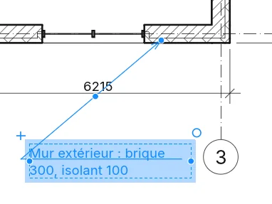
Annotations ▸ Texte ▸ Rechercher/Remplacer cherche des mots dans les notes de la sélection courante, de la vue courante ou du projet entier (Portée :), avec des options pour la casse et les mots entiers. Rechercher tout liste les occurrences avec la vue où elles se trouvent ; Rechercher le suivant, ou un clic sur une ligne, sélectionne cette note et montre son texte entier sous Contexte. Remplacer change l'occurrence en surbrillance (la première s'il n'y en a aucune), Remplacer tout chacune d'elles, et Fermer ferme la boîte de dialogue. Sur des notes sélectionnées, il se trouve aussi sous Outils de leur onglet.
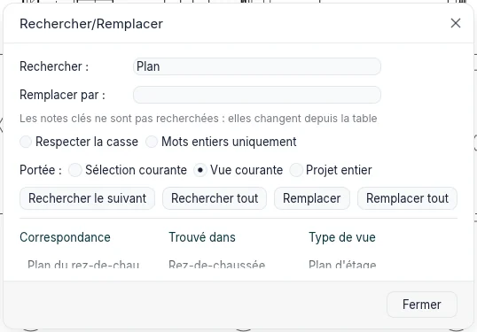
Dans un groupe, Rechercher tout affiche une ligne par type de groupe, avec un cadenas et le nombre de copies ; ces notes se modifient depuis Modifier le groupe, où la portée devient Groupe en modification et Terminer porte la modification à toutes les copies.
Annotations ▸ Texte ▸ Correcteur orthographique (F7) vérifie les notes de texte
sélectionnées, sinon celles de la vue ou de la feuille (avec les vues placées dessus) ; étiquettes,
cotes, paramètres et nomenclatures restent à l'écart, et en 3D la commande est grisée. Pour chaque
mot absent du dictionnaire, la fenêtre montre la note avec le mot en évidence, Remplacer par et
jusqu'à six Suggestions : Ignorer, Tout ignorer (jusqu'à la fermeture du projet),
Ajouter au dictionnaire (le dictionnaire Personnel), Remplacer et Tout remplacer
(aussi dans les notes encore à vérifier) ; un mot répété s'enlève avec Supprimer. Toute la
vérification est une seule étape d'annulation. Les notes des groupes sont ignorées et le message
final liste les groupes ; dans Modifier le groupe, seules ses notes sont vérifiées. Options ▸
Orthographe réunit les cinq cases (mots en majuscules, avec chiffres, en casse mixte, adresses web
et chemins, mots répétés), Rétablir les valeurs par défaut, le Dictionnaire principal
(l'italien est intégré, les autres langues arrivent avec les modules de langue) et le dictionnaire
Personnel, un fichier texte avec un mot par ligne, avec Modifier….
La Police du texte du type de texte est BIMopen Sans ou BIMopen Mono, à chasse fixe ; son Facteur de largeur dessine les lettres plus étroites (sous 1) ou plus larges, à l'écran, à l'impression et dans les exports.
Format du texte et lignes de repère
Pendant la saisie, Gras, Italique et Souligné (ou Ctrl+B, Ctrl+I, Ctrl+U) s'appliquent aux caractères sélectionnés ; sans sélection, à ce que vous tapez ensuite. Avec la note sélectionnée mais pas en saisie, ils s'appliquent à toute la note. Quand la sélection est en partie formatée, le bouton l'indique par un bord en tirets.
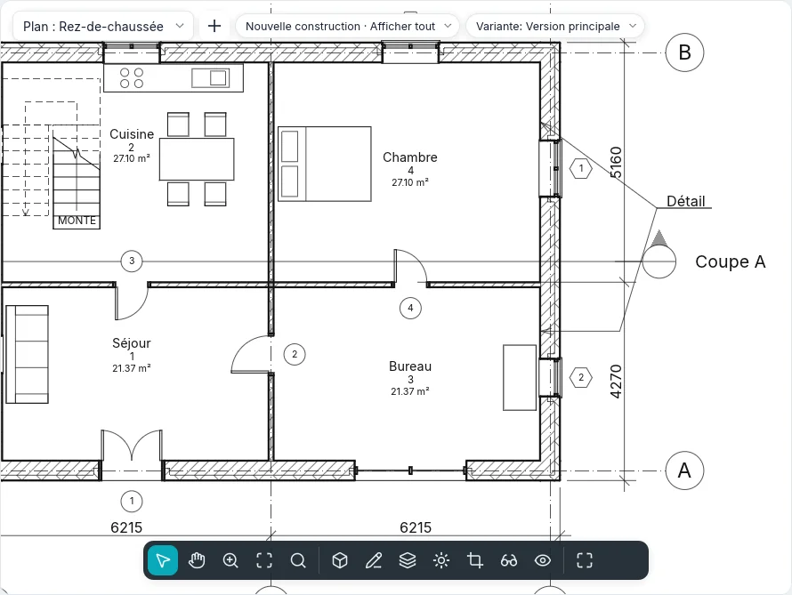
Format de paragraphe s'applique aux paragraphes touchés par la sélection (ou à celui du curseur), et la numérotation reprend après un paragraphe sans liste. Tab décale le texte du paragraphe d'une tabulation (la puce reste), Shift+Tab supprime le retrait. Le texte collé prend le format du paragraphe. Pendant la saisie, Coller, Couper et Copier du groupe Presse-papiers agissent sur le texte, au curseur.
Avec une ligne de repère, près d'une autre note l'extrémité de la ligne s'accroche à ses six points d'attache (à gauche et à droite, en haut, au milieu et en bas), avec le repère et l'info-bulle Attache de la note ; Tab passe au point suivant. Sans ligne de repère, la note s'aligne sur les origines des autres notes (à gauche, au centre ou à droite selon l'alignement) et sur les textes des étiquettes. Avec l'attache En haut ou En bas, la ligne continue sous la première ou la dernière ligne ; Au milieu, ou avec Afficher la bordure, elle s'arrête au bord.
En cliquant ailleurs, la note qui vient d'être saisie reste sélectionnée avec ses contrôles et l'outil reste actif : le premier Échap annule la sélection, le second ferme l'outil. Exposant et Indice réduisent et montent ou descendent les caractères choisis ; Tout en majuscules les affiche en capitales sans changer le texte saisi.
Symboles
Annotations ▸ Symbole ▸ Symbole (SY) place un symbole d'annotation 2D dans un plan, une coupe,
une vue 2D libre ou une légende : une Flèche du nord, un Symbole d'axe, une Flèche de
flux, une Cible ou un Delta de révision, les deux derniers avec un texte propre. Le
symbole suit le curseur avant le clic ; la barre d'espace le tourne d'un quart de tour, ou
Rotation dans la barre des options fixe son angle. Avec Nombre de lignes de repère :
au-dessus de zéro, le clic place le symbole et les clics suivants posent les extrémités de ses
lignes de repère. Le type fixe la taille du symbole sur le papier et la pointe de ses lignes de
repère ; Dupliquer… dans Paramètres du type en crée un nouveau.
Étiquettes
Annotations ▸ Étiquette ▸ Etiqueter par catégorie (TG) : survolez un élément (une porte, une
fenêtre, un mur, une pièce ou une surface) et cliquez pour l'étiqueter. La barre des options règle
Horizontale ou Verticale, la Ligne de repère et sa longueur ; la barre d'espace
change l'orientation, pendant le placement ou sur une étiquette sélectionnée. Les outils porte et
fenêtre ont Étiqueter lors du placement, de sorte que chaque nouvelle porte ou fenêtre arrive
avec son étiquette.
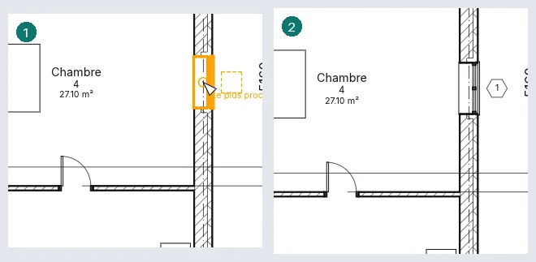
Etiqueter tout ouvre Étiqueter tout ce qui n'est pas étiqueté : cochez les catégories, le type d'étiquette de chacune, la ligne de repère et l'orientation, pour tous les éléments de la vue ou seulement les éléments sélectionnés ; seuls les éléments sans étiquette en reçoivent une.
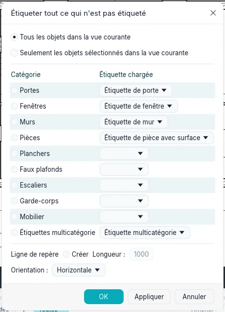
Avec une ligne de repère, Extrémité attachée la termine sur l'élément ; Extrémité libre la termine là où vous avez cliqué, et une étiquette sélectionnée montre une poignée pour faire glisser cette extrémité n'importe où (Extrémité de la ligne de repère dans les propriétés passe de l'une à l'autre). Une étiquette s'aligne sur les autres étiquettes du même genre pendant le placement ou le glissement : près de la ligne du centre d'une autre étiquette, elle s'y aimante, et une ligne discontinue le montre. Les étiquettes masquées dans la vue (Visibilité et graphisme) sont activées quand vous étiquetez, et le message l'indique.
Double-cliquez une étiquette pour modifier ce qu'elle montre : le repère d'une porte ou le repère de type d'un mur sur place ; le numéro et le nom d'une pièce ou d'une surface ensemble dans Modifier les valeurs d'étiquette. Une étiquette prend un autre type de sa propre catégorie dans le sélecteur de type, et Choisir un nouvel hôte (groupe Hôte) la déplace vers un autre élément de la même catégorie. Les types d'étiquette de pièce choisissent s'ils montrent le numéro, la surface et le volume. Une étiquette de pièce ou de surface réglée sur Motif garde un angle : elle tourne avec Faire pivoter, et la barre d'espace l'aligne tour à tour sur chaque mur proche (Rotation dans ses propriétés). Supprimer l'étiquette d'une pièce laisse la pièce, et le message l'indique.
Étiquettes chargées et numérotation
Annoter ▸ Étiquette ▸ Étiquettes chargées (dans le style BIMopen la commande du même nom ; dans la barre d'options de Porte et Fenêtre le bouton Étiquettes chargées…) liste chaque catégorie étiquetable avec son étiquette par défaut. Un filtre réduit la liste ; dans la colonne de l'étiquette on choisit un type de la catégorie ou, pour les catégories de modèle, une étiquette multicatégorie ; Modifier le type… ouvre le type de la ligne choisie. Charger… reste grisé pour l'instant. Le choix est enregistré dans le projet et vaut pour Étiquette, Étiqueter tout et Étiqueter au placement, activé dès le départ pour les portes et les fenêtres.
Chaque catégorie de modèle a son étiquette (sols, faux plafonds, toits, poteaux, escaliers, rampes, garde-corps, panneaux et meneaux, mobilier, sanitaires, modèles génériques), qui affiche la Marque de type. L'étiquette tout juste placée reste sélectionnée jusqu'à la suivante ou jusqu'à ÉCHAP, et l'outil reste actif.
Portes, fenêtres, pièces et autres éléments se numérotent à partir de la dernière marque saisie : son dernier nombre augmente en gardant les zéros (P-09 → P-10), ou sa dernière lettre (1A → 1B, Z → AA) ; une valeur déjà utilisée est sautée.
Une étiquette sélectionnée montre ses contrôles : la croix au-dessus du texte, glissée, déplace le texte et la ligne de repère suit ; le coude à mi-ligne la plie (double-clic : droite à nouveau) ; l'extrémité attachée glisse le long de l'élément. La barre d'options de l'étiquette sélectionnée a Orientation, Ligne de repère et Extrémité attachée/libre ; un clic sur le texte de l'étiquette déjà sélectionnée en saisit la valeur. Les composants de détail et les nuages de révision ont aussi leur étiquette (le nuage montre le numéro de révision).
Étiqueter tout n'étiquette que ce que la vue montre (il saute les éléments masqués, les catégories éteintes, ceux masqués par un filtre ou hors cadrage, et dit combien) ; avec une sélection il part de Seulement les objets sélectionnés et chaque ligne dit combien elle en a ; si les étiquettes sont masquées dans la vue, il demande d'abord. Dans Styles d'objets et Visibilité/Graphismes, sous Étiquettes, chaque sorte d'étiquette (portes, fenêtres, murs, pièces, mobilier, multicatégorie, matériau…) a sa ligne avec épaisseur, couleur et motif.
Étiquettes multicatégorie
Annotations ▸ Étiquette ▸ Étiquette multicatégorie étiquette n'importe quel élément du modèle : murs, portes, fenêtres, sols, plafonds, toits, poteaux, escaliers, garde-corps, mobilier, appareils sanitaires, panneaux de façade et modèles génériques (pièces et surfaces ont leurs propres étiquettes). Elle a les options d'Étiquette et, posée, les mêmes propriétés ; la barre d'espace la tourne. Ce qu'elle affiche se choisit dans le type (Paramètres du type) : Étiquette, Modifier… ouvre Modifier l'étiquette, les champs un par ligne, chacun avec un préfixe et un suffixe, choisis parmi Catégorie, Nom du type, Marque, Marque de type, Commentaires, Description, Nombre d'hôtes et les paramètres de projet et partagés. Une valeur vide, ou un paramètre que l'élément n'a pas, se lit ?.
Avec un Paramètre de filtre (un paramètre partagé) dans le type, seuls les éléments qui ont ce paramètre s'allument et s'étiquettent. Un double clic sur une ligne de l'étiquette sélectionnée en tape la valeur : un paramètre de l'élément change tout de suite ; un paramètre de son type demande d'abord, car tous les éléments du type changent. Étiqueter tout liste aussi les étiquettes multicatégorie : cochées, chaque élément de la vue qui a le paramètre de filtre et aucune étiquette de ce type en reçoit une. Dans une coupe ou une élévation l'étiquette va là où l'on clique, sa ligne de repère au point de l'élément. Elle suit l'élément : quand l'élément bouge ou change, l'étiquette et le bout de sa ligne de repère bougent avec lui, comme en plan ; là aussi la barre d'espace la tourne et un double clic en tape la valeur. Les étiquettes de matériau suivent leur élément de la même façon, en plan et en coupe.
Étiquettes de matériau
Annotations ▸ Étiquette ▸ Matériau étiquette le matériau sous le curseur, dans un plan, une coupe ou une élévation en niveau de détail Moyen ou Élevé : une couche de mur, de sol, de toit ou de plafond, coupée ou vue, ou le matériau d'une porte, d'une fenêtre, d'un composant ou d'un poteau. En niveau de détail Faible les couches ne sont pas dessinées : elles ne s'allument pas et la barre d'état le dit. L'étiquette affiche la Description du matériau ; vide, elle se lit ? : double-cliquez, tapez, et la description du matériau est remplie (toutes ses étiquettes l'affichent). Faites glisser la poignée au bout de la ligne de repère sur une autre couche et l'étiquette lit ce matériau ; la barre d'espace la tourne. Si l'élément perd ensuite ce matériau (son type change), l'étiquette se lit ? et la modification avertit. L'Étiquette du type choisit ce qu'elle affiche : Description, Nom, Commentaires, Marque, Classe de matériau, Mots-clés, Fabricant, Modèle, Coût, URL, Note clé ou Nombre d'hôtes.
Étiquettes à plusieurs lignes de repère
Activez Ajouter/Supprimer un hôte dans la barre des options d'Étiquette, d'Étiquette multicatégorie ou de Matériau, cliquez les éléments l'un après l'autre (un second clic en retire un), puis un endroit vide : une seule étiquette s'y place, avec une ligne de repère vers chaque élément (Entrée la place près du premier). Une étiquette par catégorie prend des éléments de sa catégorie, une étiquette de matériau des endroits du même matériau. Sur une étiquette sélectionnée, Hôte ▸ Ajouter/Supprimer un hôte ajoute ou retire des lignes de repère jusqu'à Fin ; Lignes de repère ▸ Fusionner les lignes de repère les réunit en un coude avant l'étiquette, et Choisir les lignes de repère à afficher masque ou affiche la ligne de repère de chaque hôte cliqué. Nombre d'hôtes dans les propriétés dit combien d'éléments l'étiquette désigne. Supprimer un élément retire sa ligne de repère ; l'étiquette reste tant qu'elle désigne quelque chose.
Plusieurs valeurs
Quand les hôtes d'une étiquette diffèrent (deux portes aux marques différentes, un champ d'une étiquette multicatégorie), cette ligne se lit ‹valeurs différentes› ; une ligne qu'ils partagent se lit avec sa valeur, et Nombre d'hôtes ne varie jamais. Double-cliquez : le champ s'ouvre vide, ou avec la valeur commune, et ce que vous tapez va à tous les hôtes en une seule étape (un paramètre de leurs types demande d'abord). Une étiquette de pièce ou de surface à plusieurs pièces ouvre Modifier les valeurs d'étiquette avec ce qu'elles partagent ; seul ce que vous tapez est écrit. Projet ▸ Paramètres supplémentaires ▸ Indication de valeurs multiples choisit ce que montrent ces lignes : ‹valeurs différentes›, ou Afficher un texte personnalisé avec un texte à vous. La palette Propriétés de plusieurs éléments sélectionnés montre le même texte là où leurs valeurs diffèrent.
Notes clés
Annotations ▸ Étiquette ▸ Note codifiée a quatre entrées (le style BIMopen les montre en tuiles) :
- Note d'élément : cliquez l'élément (un mur, une porte, un composant, un composant de détail… dont le type a une Note clé), puis le coude de la ligne de repère, puis l'endroit de la note. Elle lit la Note clé du type ; un type qui n'en a pas ouvre Notes clés.
- Note du matériau fonctionne comme Matériau : cliquez un matériau (une couche en niveau de détail Moyen ou Élevé) et la note lit sa Note clé ; sa ligne de repère finit toujours sur le matériau.
- Note libre : les mêmes trois clics ; Notes clés s'ouvre toujours et la valeur reste dans la note, l'élément ne change pas.
- Options des notes codées : voir plus bas.
Chaque note a quatre types : Numéro, Numéro dans un grand cadre, Numéro dans un petit cadre et Texte (le texte de la note tiré de la table). La barre des options a l'orientation, la Ligne de repère et l'Extrémité attachée ou libre (celle de la note du matériau est toujours libre).
Notes clés montre la table en arbre : Valeur de clé et Texte de la note clé, chaque ligne sous sa valeur parente ; + et − ouvrent et ferment les branches, Rechercher trouve les mots dans les valeurs et les textes. OK donne la ligne choisie, Annuler laisse le cadre vide. Modifier la table… modifie la table du projet (valeur, texte, valeur parente). Une note sélectionnée, un clic sur sa valeur, ou sur son cadre vide, en choisit une autre : la note d'élément écrit la note clé du type après l'avoir demandé (tous les éléments du type changent), la note libre seulement elle-même, la note du matériau le matériau. … à côté de Note clé dans Paramètres du type et dans l'Identité d'un matériau ouvre le même arbre.
Options des notes codées choisit d'où vient la table : Table dans le projet (modifiée ici) ou Fichier lié, un fichier texte avec une ligne par note — valeur, TAB, texte, TAB, valeur parente (un tableur enregistré en texte avec tabulations convient). Chemin complet montre où est le fichier, Chemin enregistré comment il est écrit, avec Parcourir… ; le Type de chemin est Absolu, Relatif (au dossier du projet) ou Dans la bibliothèque. Afficher… montre la table en lecture seule. Table d'exemple lie la table fournie : courte, en italien, avec gros œuvre, isolation, menuiseries et une section de notes utilisateur. Recharger le relit tout de suite, et la boîte de dialogue avertit quand le fichier a changé depuis sa lecture. Le fichier est relu à chaque ouverture du projet ; le projet en garde une copie, utilisée si le fichier manque (il le dit), et les valeurs que le fichier n'a plus sont listées. Méthode de numérotation : Par note clé affiche la valeur ; Par feuille numérote les notes 1, 2, 3… sur chaque feuille dans l'ordre de leur création, et une vue qui n'est pas sur une feuille montre un cadre vide.
Vue ▸ Légendes ▸ Légende des notes codées crée une nomenclature, Légende des notes clés, avec Valeur de note clé et Texte de la note clé, une ligne par valeur, avec les onglets habituels des nomenclatures (un filtre comme «commence par» sur la valeur, tri, mise en forme, apparence). Filtrer par feuille (dans Filtre) liste sur chaque feuille seulement les notes de ses vues ; numérotée par feuille, elle montre les mêmes numéros. Rechercher/Remplacer ne change jamais les notes clés : elles changent depuis la table.
Pièces
Début ▸ Pièces et surfaces ▸ Pièce (RM), puis cliquez à l'intérieur d'une région fermée par des
murs ou des séparateurs de pièces : la pièce la remplit, autour des murs isolés aussi. Dans la barre
des options :
- Limite supérieure et Décaler : la pièce atteint ce niveau plus le décalage (4000 mm par défaut) ; un niveau plus haut donne une pièce sur plusieurs étages, comme un atrium ;
- Étiqueter lors du placement, activé par défaut, avec l'orientation et la ligne de repère de l'étiquette ;
- Pièce : Nouveau, ou une pièce qui n'est pas placée, pour la remettre ;
- Mettre en surbrillance les limites : les murs et séparateurs qui délimitent des pièces deviennent orange, et l'avertissement les liste.
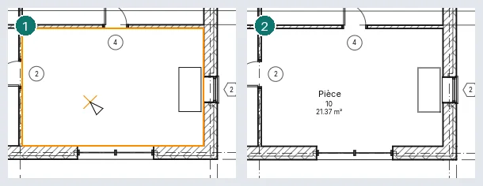
Une pièce placée dans un espace ouvert est conservée avec un avertissement, et prend sa forme une fois l'espace fermé ; une seconde pièce dans une région déjà occupée est marquée Pièce redondante et n'est pas comptée deux fois. Un numéro que porte déjà une autre pièce, une pièce plus basse que la hauteur de calcul (1200 mm) et une base au-dessus d'elle font aussi l'objet d'un avertissement, de même qu'un séparateur de pièces dessiné sur un autre.
Les murs délimitent les pièces d'un niveau quand ils s'élèvent à sa hauteur de calcul : 1200 mm tant que Hauteur de calcul automatique des pièces est cochée dans les propriétés du niveau, sinon sa Hauteur de calcul.
Une coupe montre les pièces qu'elle traverse quand elles sont sélectionnées ou sous le curseur (TAB atteint une pièce derrière d'autres éléments). Une pièce sélectionnée dans la coupe a une flèche en haut et une à sa base : faites-les glisser pour changer son Décalage limite et son Décalage en bas.
Séparateur de pièces dessine des lignes qui divisent un espace en pièces sans murs. Un mur délimite des pièces tant que sa propriété Délimitation de pièce est activée. Les sols et les toits au-dessus plafonnent le volume de la pièce.
Supprimer une pièce la retire du plan mais la garde dans le projet, Non placée, avec ses données ; ses étiquettes partent avec elle. Supprimer une étiquette de pièce laisse la pièce. Une étiquette de pièce tirée hors de sa pièce demande s'il faut Déplacer dans la pièce.
Les pièces se montrent par leurs étiquettes. Dans Visibilité et graphisme, Pièces a Remplissage intérieur et Référence (les lignes en croix). Calculs de surface et de volume s'ouvre sur Calcul : la limite de pièce à la finition du mur, à l'axe, à la couche d'âme ou à l'axe de l'âme, et Surfaces et volumes pour calculer aussi les volumes (par défaut seulement les surfaces ; le volume est toujours mesuré à la finition du mur). Son second onglet est Schémas de surfaces.
Surfaces
Les surfaces appartiennent à un schéma de surfaces : Surface brute (qui ne peut pas être supprimé) et Locative viennent avec chaque projet, et Schémas de surfaces ▸ Nouveau en ajoute d'autres.
- Pièces et surfaces ▸ Surface ▸ Plan de surfaces : choisissez le schéma et les niveaux. Répondez Oui pour dessiner des contours de surface le long des murs extérieurs, Non pour les dessiner vous-même.
- Surface ▸ Contour de surface : dessinez les limites, ou désignez des murs ; avec les règles de surface activées, un mur extérieur d'un plan brut donne sa face extérieure.
- Surface ▸ Surface : cliquez à l'intérieur des limites. La surface est étiquetée au placement ; Étiquette ▸ Étiquette de surface l'étiquette plus tard. Placée là où aucune limite ne ferme de région, la surface est conservée avec un avertissement et prend sa forme dès qu'elles la ferment ; une seconde surface dans une région est Surface redondante.
Supprimer une surface la laisse dans le projet, non placée, sans ses étiquettes ; Surface : dans la barre des options de l'outil Surface liste les surfaces non placées, pour en remettre une en un clic.
Schémas de couleurs
Un schéma de couleurs remplit les pièces ou les surfaces d'un plan (et les pièces qu'une coupe traverse) selon une valeur (nom, numéro, service, type de surface) ou selon des plages de surface. Réglez-le dans la propriété Schéma de couleurs du plan ; (aucun) le désactive. Schémas de couleurs (Modifier le schéma de couleurs) crée et duplique des schémas et modifie le titre, le paramètre, les valeurs avec leur couleur et leur visibilité, leur ordre et les plages. Appliquer garde les changements et règle le schéma de la vue avec la boîte de dialogue ouverte. Emplacement du jeu de couleurs, une propriété de vue, dessine les remplissages à l'Arrière-plan (sous le modèle) ou au Premier plan (au-dessus du modèle, sous les annotations).
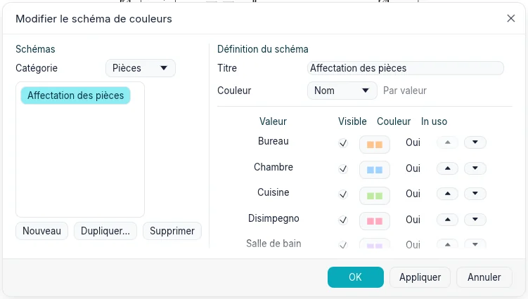
Pièces et surfaces ▸ Légende place la légende du schéma du plan : un échantillon et une étiquette pour chaque valeur. Ses Valeurs affichées sont Selon la vue (celles du plan) ou Toutes, et Colonnes répartit les échantillons en plusieurs colonnes. Un plan peut avoir plusieurs légendes ; en supprimer une laisse le schéma.
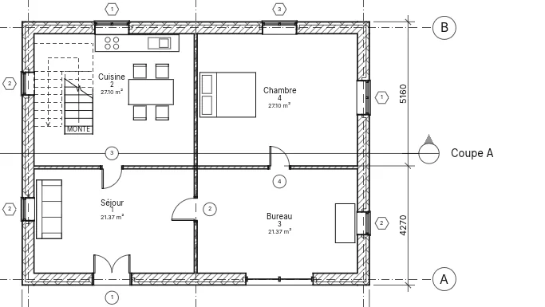
Vues de légende
Vues ▸ Légendes ▸ Légende ouvre Nouvelle vue de légende : un nom et une échelle. La légende s'ouvre et figure sous Légendes dans l'Index du projet. Annotations ▸ Composant ▸ Composant de légende place le symbole d'un type : dans la barre des options, le type, la Vue d'où il est vu (un mur en plan ou en coupe ; un sol ou un toit en coupe ou en plan ; une porte, une fenêtre ou un composant en plan, de face ou de dos) et la Longueur de l'hôte, le morceau de mur où se trouve une porte ou une fenêtre. Les composants de légende se dessinent au Détail de la légende, peuvent être déplacés et cotés (les bords des portes, fenêtres et composants ; pas les murs, sols ni toits), et ne sont pas comptés par les nomenclatures. Le texte, les lignes de détail et les régions fonctionnent comme dans une vue 2D libre. Une légende peut être placée sur plusieurs feuilles.
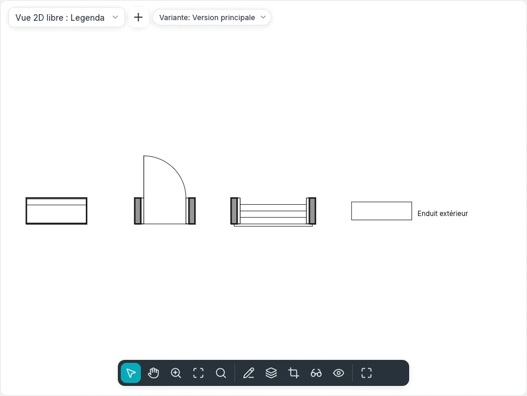
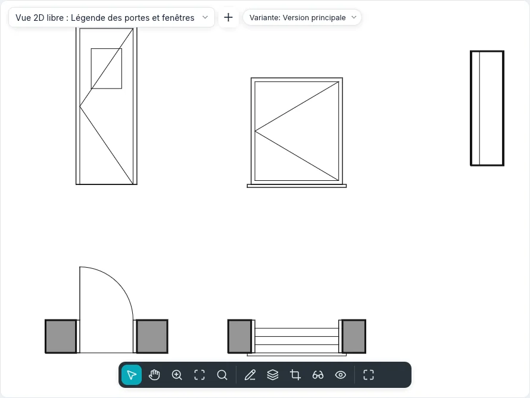
Composant liste aussi les plafonds, escaliers, garde-corps et poteaux, et deux sortes d'échantillons liés : Matériaux : … dessine un échantillon du motif de Coupe ou de Surface du matériau, un Échantillon large × haut, et Styles de ligne : … dessine une ligne aussi longue que Longueur ; Avec le nom écrit le nom à côté. Un échantillon suit ce qu'il représente : si le motif ou le nom du matériau, ou l'épaisseur, la couleur ou le motif du style changent, la légende suit. Dans Visibilité/Graphisme de la légende, les portes (Cadre, Panneau, Lignes d'ouverture, Vitrage, Seuil), fenêtres (Cadre, Vitrage, Appui, Lignes d'ouverture), escaliers (Girons, Contremarches, Ligne de foulée) et garde-corps (Main courante, Montants) ont leurs sous-catégories, activées une à une : une légende des seuls cadres est une légende de portes avec les autres lignes désactivées. La légende de remplissage de couleur (Pièces et surfaces ▸ Légende) se place aussi dans une coupe ou une élévation avec un schéma de couleurs.
Un type glissé depuis Composants dans l'Index du projet vers une légende devient son composant de légende à l'endroit où on le dépose ; un type de Composants ▸ Symboles place ce symbole d'annotation. Créer identique, dans le menu contextuel d'un élément sélectionné, lance l'outil qui le place avec son type : pour un composant de légende, avec aussi sa vue et la longueur de l'hôte.
Lignes de détail et régions
Annotations ▸ Détail ▸ Ligne de détail (DL) dessine des lignes dans la seule vue ouverte, avec le
style de ligne du groupe Style de ligne. Le groupe Dessiner propose Ligne,
Rectangle, Polygone inscrit, Polygone circonscrit, Cercle, Arc début-fin-rayon,
Arc par centre et extrémités, Arc tangent, Spline, Ellipse, Ellipse partielle et
Arc de raccord.
La barre des options montre ce que prend la forme :
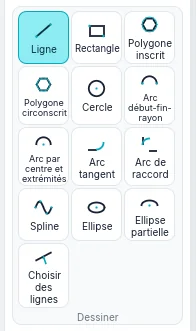
| Option | Ce qu'elle fait |
|---|---|
| Continuer | Chaque ligne (ou arc, ou spline) commence là où la précédente s'est terminée ; désactivée, chacune est indépendante |
| Décalage | Ce qui est dessiné se déplace latéralement de cette distance ; les lignes en chaîne se rejoignent à leurs coins |
| Rayon | Un cercle, un polygone ou un arc par centre et extrémités de ce rayon (un cercle prend un seul clic) ; les lignes en chaîne et les rectangles reçoivent des coins arrondis. Le Décalage est alors ignoré |
| Côtés | Le nombre de côtés d'un polygone |
Après le premier clic, tapez une longueur (une ligne, une corde) ou un rayon (cercles, polygones, arcs, axes d'ellipse) et appuyez sur Enter ; la valeur s'affiche au curseur. Un arc par centre et extrémités ne dépasse jamais 180° : au-delà, il tourne dans l'autre sens, et un angle tapé fixe son extrémité. Un arc tangent commence à l'extrémité d'une ligne ou d'un arc que vous cliquez. Shift garde les lignes et les rayons de polygone horizontaux ou verticaux, fait tourner les cordes, les rayons d'arc et les axes d'ellipse par pas de 45°, et garde l'ouverture d'un arc à 90°, 180° ou 270°. Esc termine une chaîne ou une spline. Les mêmes formes et options se trouvent dans toute esquisse (sols, toits, régions, nuages de révision, profils de mur).
Choisir des lignes crée une ligne de détail sur la face, l'axe ou une couche d'un mur, sur un quadrillage ou sur une autre ligne sous le curseur (Tab pour la suivante), déplacée du Décalage ; avec Fixer, la ligne reste sur elle et la suit quand elle bouge. Arc de raccord choisit deux lignes et arrondit leur coin, avec l'arc sous le curseur ou du Rayon réglé. Une ligne de détail sélectionnée a des poignées à ses extrémités et une cote temporaire de sa longueur : tapez une valeur pour la changer. Le curseur s'aimante aux extrémités, aux milieux, aux centres et aux croisements des lignes de détail de la vue. L'extrémité d'une ligne sélectionnée seule glisse seule et laisse la ligne voisine en place ; avec une chaîne sélectionnée (Tab), les extrémités où ses lignes se rejoignent glissent ensemble, en une seule étape d'annulation.
Une spline ne peut pas se fermer sur elle-même : un clic sur son premier point est refusé, et une deuxième spline ferme le contour. Une spline sélectionnée a une poignée à chaque point de contrôle : faites-en glisser une au milieu pour changer la courbe ; faites glisser une extrémité pour déplacer toute la spline, ou appuyez d'abord sur Tab sur l'extrémité pour ne déplacer qu'elle. Modifier la spline ▸ Ajouter un contrôle place un point de contrôle au milieu de la corde cliquée (au-dessus, la barre d'état indique Référence) et Supprimer le contrôle retire celui que vous cliquez ; Esc les termine. Une ellipse sélectionnée montre ses deux rayons en cotes temporaires (tapez une valeur pour en changer un) et une poignée à chaque quadrant : en faire glisser une redimensionne cet axe et tourne l'ellipse vers le curseur. Avec La modification conserve les proportions dans la barre des options, les deux rayons changent ensemble. Une ellipse partielle a aussi une poignée à chaque extrémité : Faire glisser l'extrémité change jusqu'où elle tourne, Tab passe à Faire glisser l'extrémité de l'axe, qui déplace cette extrémité de l'axe tandis que l'autre reste. Choisir des lignes sur un arc, un cercle, une ellipse ou une spline la copie ; avec Décalage, une ellipse ou une spline donnent des splines.
Le troisième point d'un Arc début-fin-rayon s'accroche quand l'arc devient tangent à la ligne ou à l'arc qui finit à son début ou à sa fin : le symbole de tangence apparaît et la barre d'état indique Tangente. Une ligne tracée depuis l'extrémité d'un arc s'accroche de même tangente à lui. Un arc sélectionné a une poignée à chaque extrémité, qui change son ouverture, et une au milieu : avec Rester concentrique dans la barre des options le rayon change autour du même centre, sinon les extrémités restent où elles sont. Il en va de même en plan, coupe, élévation et 3D.
Région remplie ▸ Région remplie ouvre le mode esquisse : la limite s'esquisse avec toutes les formes du groupe Dessiner et avec Choisir des lignes, et les boucles à l'intérieur d'une autre sont des trous. Une spline ou une ellipse reste une courbe de l'esquisse, avec ses poignées ; le contour de la région est fait de ses courts morceaux. Esc termine une chaîne et garde l'esquisse ; Modifier et les outils de modification agissent sur ses lignes. Terminer le mode d'édition crée la région dans le type de région courant, ou dit pourquoi il ne le peut pas (une limite ouverte ou qui se croise). Modifier le contour d'une région sélectionnée rouvre son esquisse. Le type fixe sa trame de remplissage, sa couleur et son fond (Opaque cache ce qui est derrière). Région remplie ▸ Région de masquage crée une région de la couleur du papier qui cache ce qui se trouve dessous. Une région montre sa Surface et a des Commentaires. Une région sélectionnée a une poignée à chaque sommet : faites-en glisser une pour changer sa forme.
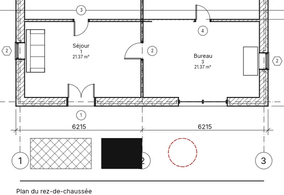
Le cadenas de tangence
Sélectionnez une ligne (d'esquisse, de détail ou 3D) qui en rejoint une autre bout à bout dans la même direction : un cadenas ouvert apparaît près de la jonction, à l'extérieur de la courbe (aucun entre deux droites). Au survol, les deux lignes sont mises en évidence ; un clic verrouille la tangence, un autre la déverrouille. Verrouillées, les lignes restent tangentes quand l'une change : une droite qui tourne fait réajuster l'arc par son extrémité éloignée ; un arc entre deux droites garde son rayon et glisse sur elles ; une ellipse tourne autour de son extrémité éloignée ; le deuxième contrôle d'une spline suit la direction. Une modification qui ne peut la conserver demande Contrainte non respectée : Supprimer la contrainte déverrouille et l'exécute, Annuler l'abandonne. Le clic droit sur le cadenas propose Activer/désactiver le verrouillage et Afficher les éléments associés. Dans le style BIMopen, la recherche de commandes propose aussi Verrouiller les tangences et Déverrouiller les tangences.
Composants de détail, détails répétitifs et isolation
- Composant ▸ Composant de détail : un symbole 2D (brique, parpaing, bois, profilé d'acier, panneau isolant, ligne de coupure) placé dans une vue 2D libre ou une vue de détail ; la barre d'espace l'aligne tour à tour sur chaque mur ou ligne de détail proche du curseur (d'un quart de tour s'il n'y en a pas).
- Composant ▸ Détail répétitif : cliquez un début et une fin ; le type fixe le composant répété, la Disposition (remplir l'espace disponible, distance fixe, nombre fixe, espacement maximal), l'Espacement, Intérieur et la rotation dans le motif. L'instance a le Numéro quand la disposition est un nombre fixe.
- Isolation : cliquez deux points ; Largeur et Décaler (l'isolant court à cette distance à gauche des clics) dans la barre des options ; avec Choisir des lignes cochée, un clic sur une ligne de détail ou un mur la dessine le long de cette ligne. La largeur de l'isolant et le rapport de boucle dans ses propriétés. Une isolation sélectionnée, comme un détail répétitif sélectionné, a une poignée à chaque extrémité.
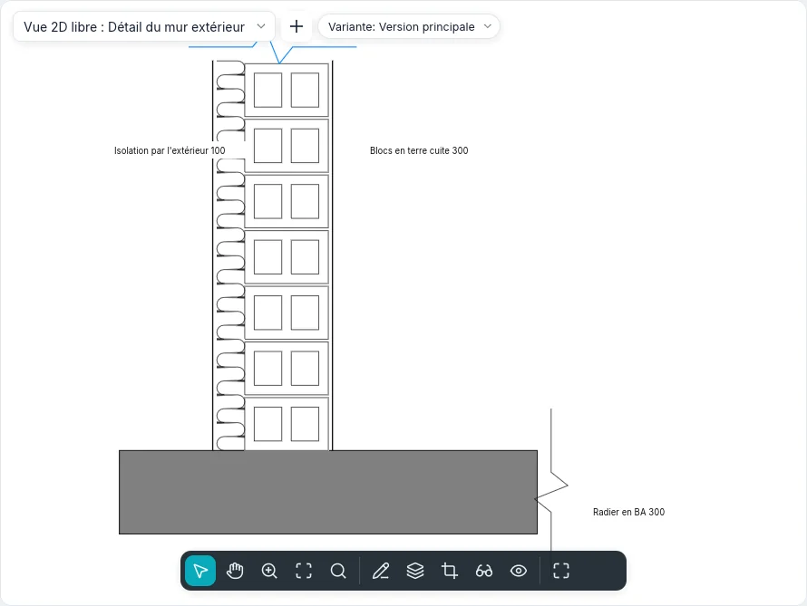
Dans Motifs de remplissage, l'Épaisseur de ligne d'un motif dessine ses lignes avec l'une des épaisseurs du projet ; laissée sur (fine), elles restent des traits fins.
Ordre de dessin
Sélectionnez uniquement des éléments de détail : Organiser propose Mettre au premier plan, Avancer, Mettre à l'arrière-plan et Reculer. Les éléments de détail se dessinent toujours au-dessus du modèle, et un nouvel élément se place au-dessus. Annuler rétablit l'ordre précédent.
Vues 2D libres
Vues ▸ Créer ▸ Vue 2D libre demande un nom et une échelle (ou une échelle personnalisée). La vue s'ouvre et figure sous Vues 2D libres ; tout ce qui y est dessiné est en 2D, sans modèle derrière. Elle peut être placée sur une seule feuille. Dupliquer la vue ▸ Dupliquer avec détails copie une vue avec ses éléments de détail, son texte, ses cotes et ses composants de légende.
Enregistrer dans un nouveau fichier… dans le menu d'une vue 2D libre de l'Index écrit un projet avec la vue, ses éléments 2D et les types utilisés. Insérer ▸ Insérer des vues depuis un fichier… liste les vues 2D libres et les nomenclatures du fichier à cocher ; Insérer des éléments 2D depuis un fichier… copie les éléments 2D d'une de ses vues dans la vue active (2D libre, plan ou coupe) : ils suivent le curseur et un clic les pose, sélectionnés. Les types du même nom restent ceux du projet et sont listés.
Type dans la boîte de dialogue et dans le sélecteur de type choisit l'un des deux types fournis, Détail et Schéma ; d'autres se créent avec Dupliquer… dans Paramètres du type, où se règlent Étiquette de coupe, Étiquette de détail, Texte du renvoi (écrit à côté de la tête d'un détail qui renvoie à la vue, par exemple «Sim.») et Gabarit pour les nouvelles vues. Style graphique est Lignes cachées (les régions hachurées masquent ce qui est dessous) ou Filaire (tout reste visible). Un Plan de référence dessiné ici n'appartient qu'à cette vue et n'est pas un plan de construction.
Dans un détail avec Référence à une autre vue, le premier élément
Afficher le modèle dans les propriétés d'un plan, d'une coupe ou d'une vue de détail dessine le modèle Normale, Demi-teinte (grisé sous les détails) ou pas du tout (Ne pas afficher), en laissant les détails et les annotations.
Vues ▸ Créer ▸ Détail avec Référence à une autre vue cochée dans la barre des options dessine un repère qui pointe vers une vue de détail ou une vue 2D libre existante au lieu d'en créer une nouvelle : sa tête nomme cette vue et un double-clic l'ouvre ; Vue référencée dans ses propriétés la change. Dans une vue 2D libre, le repère est toujours de ce genre.
Masquer aux échelles inférieures à dans les propriétés d'une coupe ou d'un repère masque son symbole dans les vues dont l'échelle est plus grossière, par exemple un détail au 1:50 absent du plan au 1:100.
En ligne de commande
Chaque outil a sa commande : dim, lineardim, angulardim, radialdim, diamdim, arcdim,
spotelevation, text, findreplace, tag, room, roomsep, areaplan, areaboundary,
area, colorscheme, legend, legendview, legendcomponent, detailline, region, mask,
draworder, lock, eq. help suivi d'une commande montre son usage ; Raccourcis
clavier liste les raccourcis tapés.